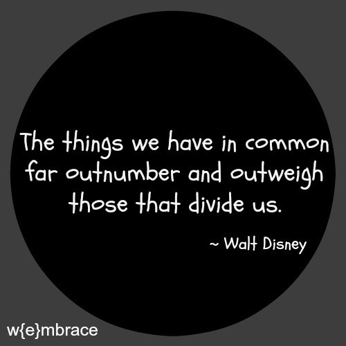

<!DOCTYPE html>
<html lang="en" style="height:100%; width:100%">
   <!-- Bootstrap Core CSS -->
  <link rel="stylesheet" href="https://stackpath.bootstrapcdn.com/bootstrap/4.2.1/css/bootstrap.min.css" integrity="sha384-GJzZqFGwb1QTTN6wy59ffF1BuGJpLSa9DkKMp0DgiMDm4iYMj70gZWKYbI706tWS" crossorigin="anonymous">


    </html>
<head>

</head>
<body style="height:100%; width:100%;">

    <div style=" height:100%; width:90%; background-color:#500000; margin: auto;">
        <div style="  width:75%; height:40%; margin:auto; ">
            <div style="width:100%; height:5%;"></div>
           
            
               <div style="width:100%; height:95%; display: table;">
                <div class="jumbotron" style=" display: table-cell; padding:0;  ">
                    <h1 class="display-4" style="text-align:center">Assignment 3</h1>
                    <p class="lead" style="text-align:center">Common Themes From 2004</p>
                    <hr class="my-4">
                    <div style="margin:auto; text-align:center">
                        
                    </div>
                    <p></p>
                    <div style="width:90%; margin:auto;">
                        <p style="text-align:center">I was very Surprised to find out how similar interests in 2004 were to interests today. The main categories I saw while going through the archives were TV and movies, computer-human interaction, email and instant messenger, Mobile phones (not smart phones, house phones were still mentioned), video games, and music. I feel as though this is basically the same as common interests we all listed with minor differences. TV and Movies was pretty much the same. Communication was a common theme, as I thought it would be since people are mostly social beings, the only difference being we don't use email much for personal communication and most people did not list it in their interests. Video games were a common interest in both the archive and ours, but the types of video games were of course different due to new systems being released. Music was another common theme, but the main difference is that most people today use a streaming service like spotify while in 2004 radio was used mostly with a few mentions of an iPod or mp3. One thing that was not as common today as it was back then was watching the news. A lot of people mentioned either watching the news or reading a newspaper, I don't remember seeing that in any of our interests and I found that very interesting. It may be due to less connectivity through social media and things of that nature which lead to more people being interested in the news.  </p>
                    </div>
                    <hr>
                    <p style="text-align:center"><a href="index.html">Home</a></p>
                </div> 
            </div>
            
        </div>
</div>
  

</body>